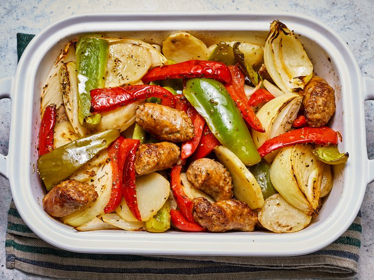

Sausage, Peppers, Onions, and Potato Bake

Prep Time: 20 minutes
Cook Time: 40 minutes
Total Time: 1 hour
Servings: 8
Description
This sausage and potato bake is a classic Italian comfort food made
with Italian sausage, potatoes, bell peppers, and onions. The
ingredients are cooked together with white wine, chicken stock, and
Italian seasoning, then baked until hot and bubbling.
Ingredients
- 2 teaspoons olive oil
- 2 pounds Italian sausage links, cut into 2-inch pieces
- 1/4 cup olive oil
- 4 large potatoes, peeled and thickly sliced
- 2 large green bell peppers, seeded and cut into wedges
- 2 large red bell peppers, seeded and cut into wedges
- 3 large onions, cut into wedges
- 1/2 cup white wine
- 1/2 cup chicken stock
- 1 teaspoon Italian seasoning
- Salt and freshly ground black pepper to taste
Steps
- Gather all ingredients.
- Preheat the oven to 400 degrees F (200 degrees C).
-
Heat 2 teaspoons of olive oil in a large skillet over medium heat.
Cook and stir the sausage until browned, about 5 to 10 minutes.
Transfer the sausage to a large baking dish.
-
Pour 1/4 cup of olive oil into the skillet. Cook the potatoes,
stirring occasionally, until browned, about 10 minutes.
-
Transfer the potatoes to the baking dish, leaving some oil in
the skillet.
-
Cook and stir the green and red peppers and onions in the skillet
until they begin to soften, about 5 minutes.
-
Add the vegetables to the baking dish. Pour the wine and chicken
stock over the vegetables and sausage. Sprinkle with Italian
seasoning, salt, and pepper.
-
Gently stir the sausage, potatoes, and vegetables together.
-
Bake in the preheated oven until hot and bubbling, about 20 to
25 minutes. Serve hot.
Nutrition Facts
- Calories: 539
- Fat: 30g
- Carbohydrates: 46g
- Protein: 20g
Back to Odin Recipes